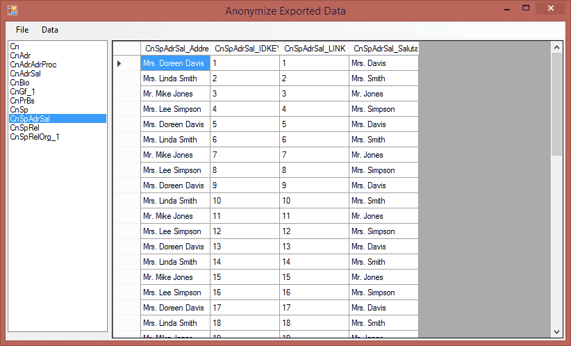
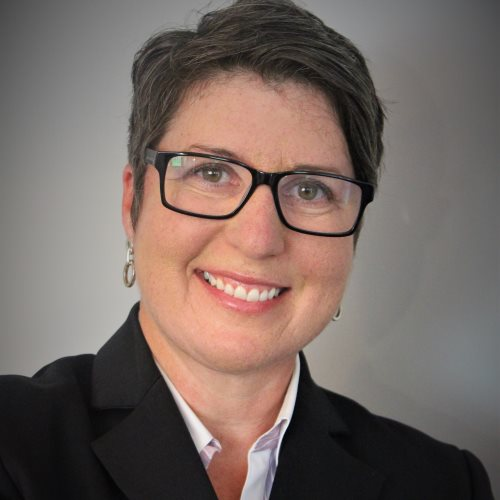
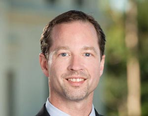
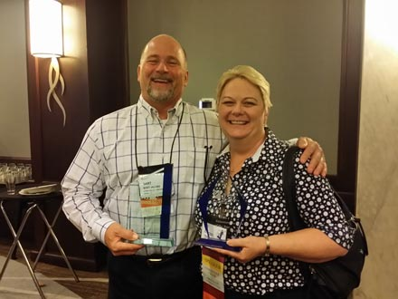
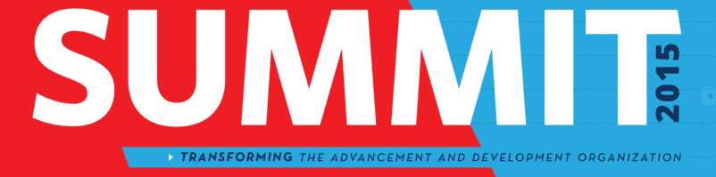
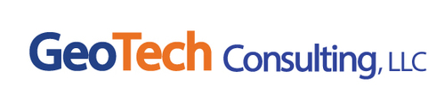
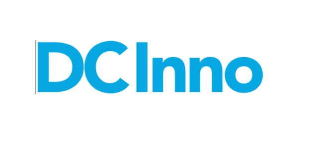
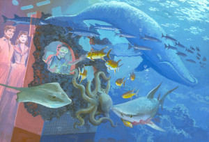
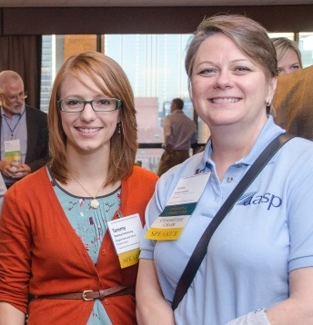

Answers that fit
Your institution. Your needs. Your mission.
What is Highland FRS?
We are a full-service consultancy serving non-profit organizations. We specialize in database optimization to prepare institutions for capital campaigns and lead/assist with data integrity efforts. We offer a variety of services covering the range of institutional needs for advancement and development.Get in contact!
Find out how HFRS can help your organization


Highland FRS is a full-service consultancy serving non-profit organizations. We specialize in database optimization to prepare institutions for capital campaigns and lead/assist with data integrity efforts. We offer a variety of services covering the range of institutional needs for advancement and development.
Highland FRS serves non-profit institutions of all shapes and sizes. We do the field management "dirty work" so you don't have to.
Management
- Process analysis
- Training
- Interim staffing
Data
- Data standardization
- Moves management pipelines
- Add/sal correction & completion
Engineering
- Reporting and business intelligence
- Software development
- Rapid application development
... And much more!
No task too big or small.top
We help assess, mitigate, and refine fundraising operations, specializing in The Raiser's Edge™ and Crystal Reports™.
We believe in specialized solutions. We are dedicated to working with your organization to discover what is needed and then create a solution that will work for you—all with minimal demands on your staff's valuable time.
Leadership Team

Melody has more than 15 years of experience in fundraising, almost 10 of which were spent in independent secondary school development. She has served as a solicitor, volunteer manager, event coordinator, the database/systems administrator and senior Crystal Reports™ architect, and as the Director of Advancement Services. Her work has been recognized by her peers, other consultants, and software manufacturers alike.
Before entering the development field, Melody served in the Armed Forces, managed various other businesses including a karate studio, and held state and local offices with the Pennsylvania Jaycees. Her cross industry experience has proven vital to formulating highly successful solutions to sticky data challenges.
Melody currently serves on the Curriculum Committee, FundSvcs Committee, and chairs the Program Committee with the Association of Advancement Services Professionals.

Globis joined HFRS as a seasoned Advancement professional with experience in constituent relationship management technology, strategy, and implementation for a wide range of complex organizations.
As a Senior Consultant at HFRS she evaluates, implements, and empowers users to get the most out of The Raiser’s Edge.
Globis holds Blackbaud Certification in The Raiser's Edge-Professional Level (bCRE-Pro) and a Cybersecurity Certificate from Texas A&M Engineering Extension Service. She is a member of the Association of Advancement Services Professionals (AASP), Council for Advancement and Support of Education (CASE), Association of Professional Researchers for Advancement (APRA), and the Princeton Regional Chamber of Commerce Community Development Fund.
Prior to joining HFRS, Roxanne was the Director of Alumni Affairs at Thomas Edison State University where she focused on the design, development, and delivery of cost-effective, high-performance technology solutions to meet challenging organization demands.
Sean serves in a dual capacity at Highland FRS. He maintains the corporate IT infrastructure—including email and this website—while also performing cutting edge research and development in Virtual Reality software development. If you would like to know more about how VR can help your non-profit organization engage constituents in exciting new ways, please visit Primrose VR.
Strategic Partners

Combs has more than 20 years of experience in fundraising and will be a key asset in Highland's capital and comprehensive campaign division. Combs' experience in performing organizational assessments, evaluating business systems and data management, applying process improvement techniques in advancement services, directing budget management, and supporting a $6 billion dollar campaign will augment the firm's current services.
Combs earned his Ed.D. in higher education administration at USC Rossier School of Education where he teaches doctoral courses in creativity, innovation and entrepreneurship. He is actively involved in supporting the field of philanthropy as a member of the board of directors for the Association of Advancement Services Professionals (AASP) and as chair/faculty for the Council for the Advancement and Support of Education (CASE).

Lynne D. Becker, Principal, consults and collaborates with organizations as well as individuals providing comprehensive services for fundraising specializing in change management and organizational behavior opportunities.
Melody has an extensive knowledge of fundraising techniques and donor software, so her work is geared toward making the software produce greater fundraising results. She looks beneath the surface to determine both digital and human solutions to inconsistencies. We have made great strides in cleaning up our data base and utilizing its capabilities under her guidance and our donor information services area is working better than ever.
Randa Cleaves, Director of Development, Oregon Episcopal School
Melody was great to work with at Children's National. She understood our fundraising database and the Special Events team needs to get the information (data about individuals) quickly, in the right format and correct. She knew it was important to educate leadership and the staff on processes for entering and looking at data that will make fundraising more successful for the Foundation. Melody was a team player and a pleasure to work with.
Sharon Kessler, Fundraising Consultant, Children's National Medical Center, worked with Melody at Children's National Medical Center
Melody is a consummate professional, who can and has stepped up her leadership skills when it was most needed. Pulled together a team and given them direction and pushed them to continue to go beyond their expected deliverables. She has my highest recommendation!
Will Waldron, Director of Annual Giving and Volunteer Relations, Mercersburg Academy, worked directly with Melody at Mercersburg Academy
Melody is a valued colleague due to her depth of insight and tenacious pursuit of systems that work for the end-user. That, combined with her military background, provide for a go-to person who delivers the right results.
Steve Blake, Director of Development Research and The Graduate School, Penn State University
Melody is a highly organized, highly skilled employee. She learned the Mercersburg Academy Development Office software system quickly and she massages it beautifully, designing and producing original reports in a timely manner. She also adds a great deal to office morale. During her tenure at Mercersburg she also earned a college degree; the work was easier than she expected and the study rounded her out nicely as a human being.
Don Hill, Assistant Head of School - External Affairs, Mercersburg Academy, managed Melody indirectly at Mercersburg Academy
Sean is a creative and clear thinking professional. His knowledge in web-based systems and database architecture proved to be quite valuable. He also earned good revues from my associates. I enjoyed working with him and look forward to doing so again should the opportunity arise.
Scott Roulier, Sean's Client
Simply put, Sean is one of the most creative problem solvers I have ever worked with. At his core, Sean embodies the engineering spirit start up companies dream of--he works till the job is finished and usually finds a better way to do something than was previously done in the process. He is talented, personable, and team-oriented; in short, Sean is the total package!
Jennifer Doebler, MBA, MA, Director of Public Relations and Operations, BuLogics, worked with Sean at BuLogics
Sean is a highly skilled developer. He has an eye for attention to detail. He strives to learn new technologies and keep his skills up to date. He thinks outside the box and uses his skills provide superior work products.
Gene Duffey, Project Specialist, Grove US LLC, managed Sean indirectly at Global Data Consultants, LLC
I have worked with Sean on several projects… He pays close attention to detail and listens to the clients' requirements. He is able to effectively communicate with his peers as well as upper management. Sean has been known to do whatever it takes to get the job done and still maintain his professionalism! Definitely a true team player… It was a wonderful experience working with Sean.
Anna Succi-Kozlowski, Business Analyst, The Manitowoc Company, worked directly with Sean at Global Data Consultants, LLC
Find out more!
We're like magical elves, except we work on data, not shoes.top
To get started with Highland FRS today, please let us know a few things about your non-profit organization.
Thank you, !
We've recorded your message in our database and we will be in contact with you as soon as possible. Our business hours are Monday through Friday, 9AM to 5PM, Eastern Daylight Savings Time.
If your message is urgent, please contact Melody McBeth at one of the following:
Oh no!
It seems there was an errrrrrrrrrrrror.
If your message is urgent, please contact Melody McBeth at one of the following:
top
The professionals at Highland Fundraising Solutions have been able to help many fundraising operations across the US. A few are listed below.
People seem to like us!
Schedule a meeting and find out why.top

Highland FRS Welcomes new Strategic Partner, Wayne Combs
Highland Fundraising Solutions is pleased to welcome Wayne Combs, Ed.D. as a strategic partner in the role of campaign counsel. Combs has more than 20 years of experience in fundraising and will be a key asset in Highland's capital and comprehensive campaign division. Combs' experience in performing organizational assessments, evaluating business systems and data management, applying process improvement techniques in advancement services, directing budget management, and supporting a $6 billion dollar campaign will augment the firm's current services.
(2016-01-04)

Melody McBeth wins Volunteer of the Year Award at AASP SUMMIT 2015
Highland Fundraising Solutions Principal Melody McBeth, AASP Program Committee Chair, received the 2015 Volunteer of the Year Award. Pictured here with Director of Development Services, Utah Valley University Bart Jacobs, AASP Membership Committee Chair, who received the 2015 Emerging Leader Award.
(2015-10-29)

Association of Advancement Services Professionals SUMMIT 2015 Silver-level Sponsor
Summit 2015 took place Oct. 28-30 in Chicago. Over the three-day conference, a record-breaking attendance of over 440 advancement services professionals participated in educational sessions, networking events, and special outings in downtown Chicago…
(2015-10-28)

D.C. Entrepreneur: Episode 2 - George Mocharko
D.C. Entrepreneur interviews Sean T. McBeth about his work in web VR, talking about the future potential of Virtual Reality.
(2015-10-22)

DCInno: The State of DC Virtual Reality Innovation: Part 1 - Chris Bing
The Washington, D.C., area could very well become a hub for virtual reality innovation in the coming years…
(2015-08-14)

Virtual World Society: Dream of the Future
Virtual Worlds are blending into our habitable universe and expanding future possibilities within our everyday lives. Our ability to connect and share ideas, dreams and accomplishments is unprecedented. Virtual worlds are no longer just branded escapist experiences, but they are augmenting our human powers of creativity, passion and the imagination. We are getting ready to launch into the next "giant leap" into the empowered human experience…
(2015-08-04)

AASPiration March 2014 Member Spotlight
AASP strives to create a close community of Advancement Services professionals, but for Melody Allen McBeth and Tammy Armstrong, the industry truly is a family affair. Melody, Director of Development Information Systems and Services and Interim Director of Gift Administration at The Children's Hospital Foundation, and her daughter Tammy, Director of Analytics at Oregon Episcopal School, share a passion for analytics and child welfare. Though their unique career paths brought them to different areas of the nonprofit sector, the two never run out of stories to share. Whether it's working out puzzling Crystal Reports over the phone or recapping sessions from the latest annual Summit, Melody and Tammy always find a resource in each other's encouragement and expertise…
(2014-03-13)
top